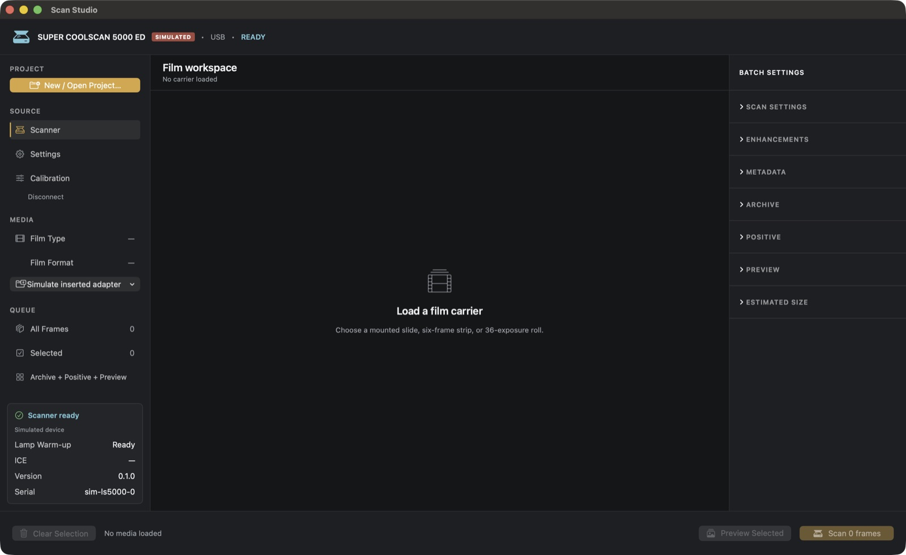
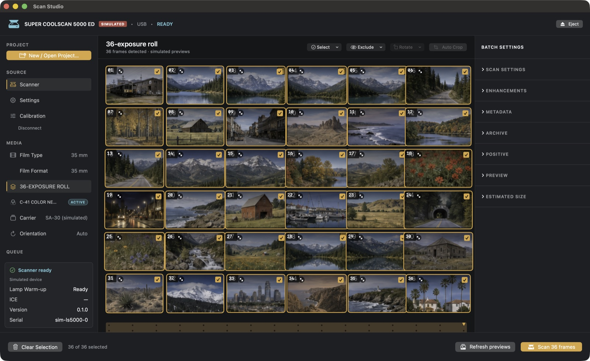
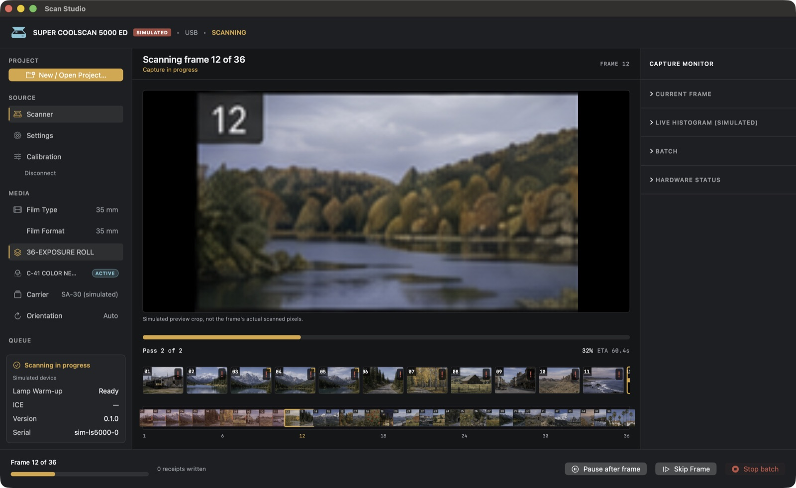

No Windows VM. No vendor drivers.
Nikon's own software for this scanner is Nikon Scan 4, an app that barely limps along on current machines and generally needs an old Windows install to run at all. Most people keeping a Coolscan alive today are doing it through a virtual machine and a shrinking pool of driver installers.
Scan Studio skips that whole chain. coolscanpy is an open USB driver for the LS-5000, built by reverse-engineering the scanner's own command set rather than wrapping Nikon's SDK. It's published on PyPI and the source is public. Scan Studio's Rust engine talks to it through a small bridge process, so the Mac app itself never touches USB directly.

Digital ICE, rebuilt, plus an honest AI pass
Dust and scratches block infrared light even though they're barely visible in the normal RGB scan. That's the whole trick behind Nikon's Digital ICE, and it's still the right one. Scan Studio's default repair pass is a byte-exact reimplementation of that idea: read the infrared channel, repair only what it actually flagged, and leave everything else alone instead of guessing at what the image should look like.
For frames with damage heavy enough that the exact pass can't fully clear it, an optional deep-repair pass can step in and synthesize the missing pixels using inpainting. I wanted that part disclosed rather than buried: it tracks exactly which pixels it invented, and it's built to refuse past a fixed synthesis budget rather than confidently overwrite more of a frame than it should. A frame that's too far gone gets flagged for manual review instead of a convincing-looking guess.
Color matched to Nikon's own engine
Nikon Scan's color pipeline for a C-41 negative is a specific, undocumented chain: histogram-driven exposure measurement, per-channel builder curves, a fixed output tone table, then an ICC profile transform. Scan Studio's Rust engine reimplements that chain end to end, checked frame by frame against Nikon Scan's own output on the same scanner.
The remaining differences sit inside the noise you'd get scanning the very same frame on the very same machine twice. That's the actual ceiling here: LS-5000 hardware isn't perfectly repeatable pass to pass either, so matching past that point isn't a meaningful target.
nikon_md3_curve · replay_ls5000_color_path
Prescan histogram → per-channel builder LUT → fixed output tone curve → ICC replay to Adobe RGB. Every stage is checked against captured reference output instead of tuned by eye against a color chart.
Load once, scan the whole roll
Feed a roll once. Scan Studio previews and detects every frame, up to 36 on a full roll, and lays them out as a contact sheet you can select, exclude, and rotate before anything gets scanned. Batch capture then runs frame by frame with pause-after-frame, skip, and stop controls, writing a receipt to disk as each frame finishes, so quitting mid-roll never loses the frames already done. Every capture keeps the raw negative, the infrared pass, and its receipt. Nothing about how the positive gets rendered is baked in for good, so a better rendering pipeline later can redo old rolls without feeding the film through the scanner again.


Four layers between your Mac and a 2003 scanner
Each piece does one job and stays replaceable. The GPL sidecar lives outside the app on purpose, so the Mac app and the Rust engine stay clean of it.
The app repo is at github.com/rohanpandula/ScanStudio. The driver is at github.com/rohanpandula/coolscanpy.
What works today, what doesn't yet
Do I need Nikon Scan or a Windows VM?
No. coolscanpy talks to the LS-5000 over USB directly, and Scan Studio never calls any Nikon software.
What film works today?
C-41 color negative is the one fully working path right now: 36-exposure rolls and 6-frame strips through the one-feed workflow. Mounted slides exist in the app's data model and simulator, but the live mounted-slide path hasn't been proven on real hardware yet.
What about black-and-white, E-6 slide film, or Kodachrome?
Designed, not shipped. The black-and-white material type already exists in the driver's data model but isn't wired into the driver or the bridge yet: asking for it today returns an explicit "not implemented" error rather than a wrong scan.
E-6 and Kodachrome need their own capture recipes and a hardware session with real film to establish parity against Nikon's own output before either one ships. All three are coming, roughly in that order.
Is the AI dust repair going to invent parts of my photo?
Only on frames damaged heavily enough that the exact infrared pass can't fully clear them, and only if you turn that pass on. It tracks exactly which pixels it synthesized, and it refuses to run past a fixed synthesis budget. Past that point it sends the frame to manual review, so a badly damaged frame never comes back looking more confident than it should.
Is this made or endorsed by Nikon?
No. This is an independent project, not affiliated with or sponsored by Nikon. Nikon, Coolscan, and Digital ICE may be trademarks of their respective owners.
What scanner does this support?
The Nikon Super Coolscan 5000 ED, also known as the LS-5000, today.
Where's the code?
The app is at github.com/rohanpandula/ScanStudio. The USB driver is at github.com/rohanpandula/coolscanpy.